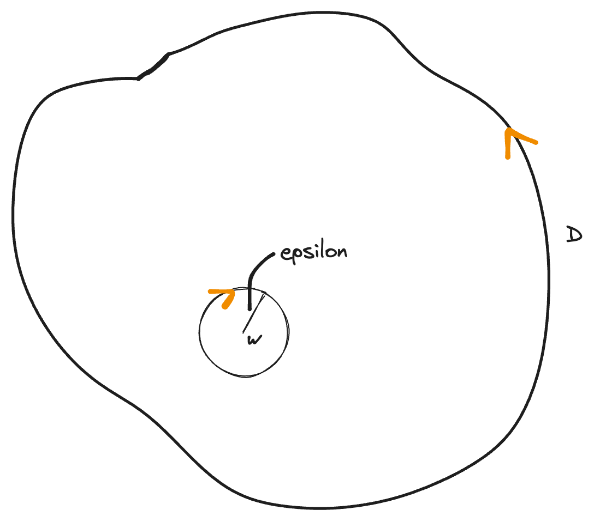
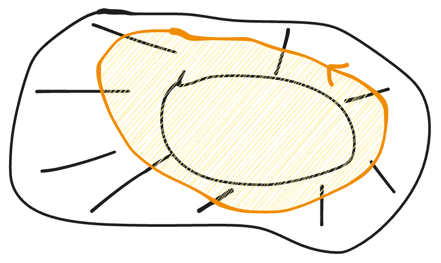
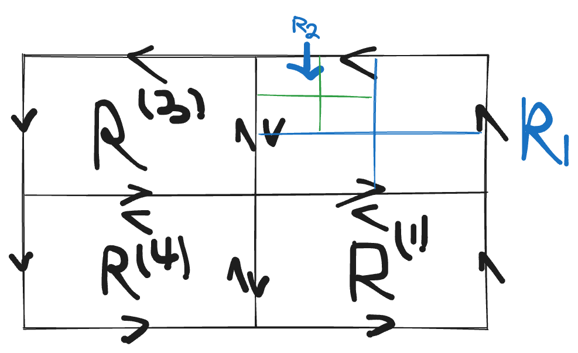
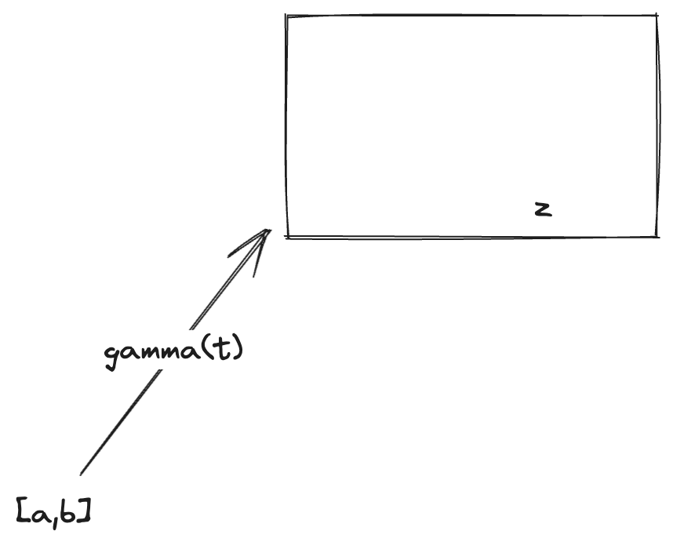
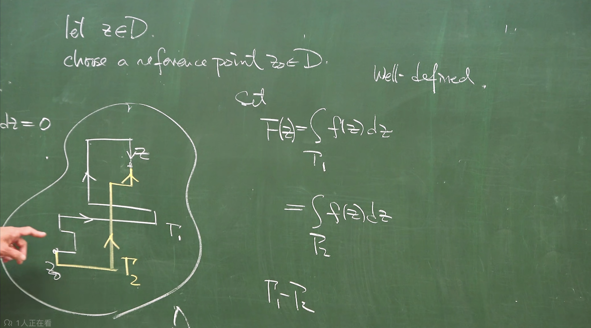
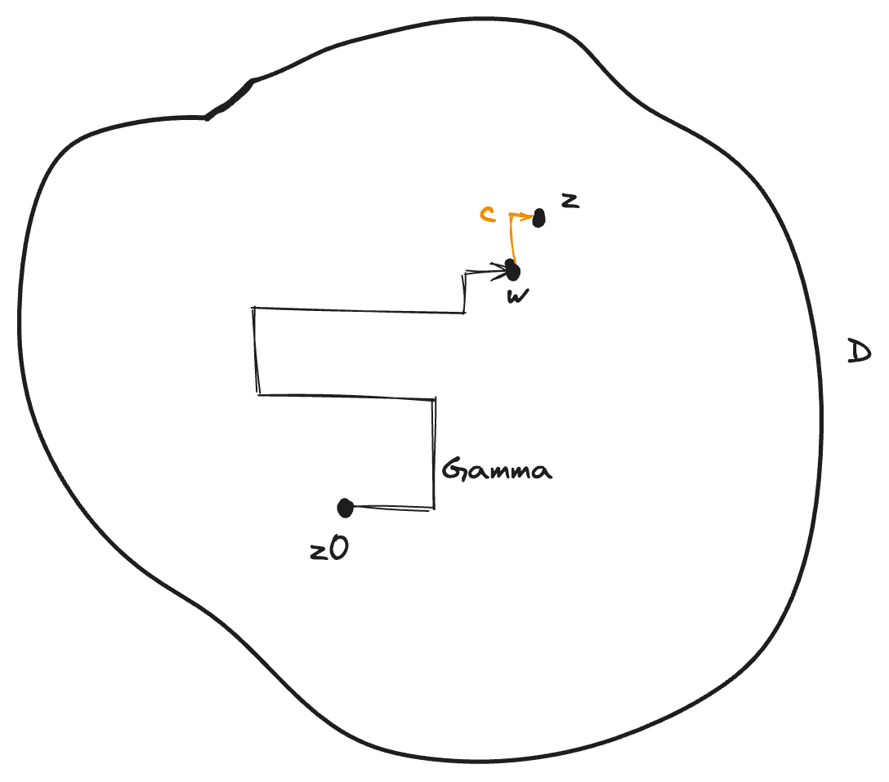
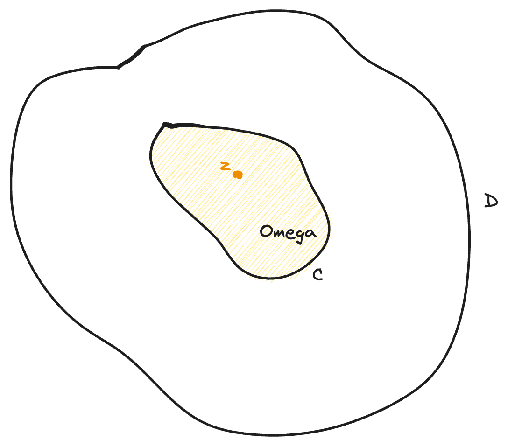
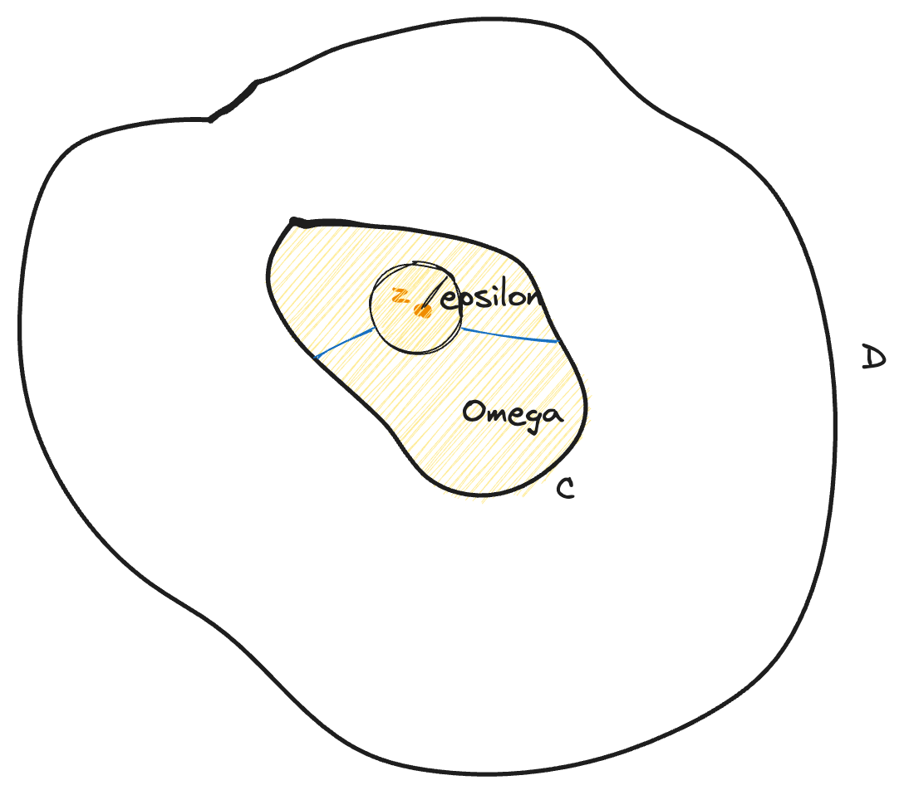

柯西積分公式
复变最重要的两个定理都在这了！！！
Theo : (Cauchy's integral formula)
Let $D$ be a bounded domain in $\mathbb{C}$ with piecewise smooth doundary. Suppose $f\in C^1(\bar{D})$, Then
where $z=x+iy$.

consider $D{\varepsilon}=D/\bar{B{\varepsilon}}$, $B_{\epsilon}=B(w;\epsilon)$
挖掉圆盘后有内外两个边界，曲线积分等于外围的减内围的
set $z=w+\epsilon e^{i\theta}$, $z-w=\epsilon e^{i\theta}$
下面考虑这个积分
因为$f$是$C^1$函数，$\frac{\partial f}{\partial \bar{z}}(z)\in C(\bar{D})$
K: compact
因为会收敛(用极坐标)
let $\epsilon\rightarrow 0$
所以$\epsilon\rightarrow 0$时
Theo Let $D\subset \mathbb{C}$ be a simply-connected domain, suppose $f\in C^1(D)\cap O(D)$. Then
$\Omega$: region surrounded by the simple closed curve $C$
simply connected 是为了保证$C$围出来的还在$D$里面，避免下面这种情况

Theo (Cauchy)
Let $D$ be a simply connected domain in $\mathbb{C}$,
$C$: simple closed curve in $D$
If $f\in O(D)$. Then
之前有$C^1$是为了诉诸于格林定理，但证明这个定理不能用格林，要用完全不同的想法

$R$: rectangle
$L$: length of $\partial R$
Claim: $\oint_{\partial R}f(z)dz=0$
反证法
Assume $\exists R$ s.t.
切割，对大长方形积一次，相当于对四个小长方形各积一次

obtain a seq. of rectangle ${R_n}$
By Cantor intersection theorem
Write near $P_0$
$\epsilon\rightarrow 0$ as $z\rightarrow P_0$
n 很大时，$f(z)$可以用$f(P_0)+f’(P_0)(z-P_0)+\epsilon (z)(z-P_0)$替换
多项式一定是某个函数的微分，
$Q(z)$: polynomial of degree at most 2

$z=\gamma(t)$
因为
$(z-P_0)$小于等于$Ln$（弦长小于等于直径），$dz$积分也小于$Ln$，所以两次。$\epsilon$用最大值提出来
由于 $\displaystyle{L_n=\frac{L}{2^n}}$
当$n\rightarrow \infty$时，$\max_{z\in \partial R_n}|\epsilon(z)|\rightarrow 0$
目前证得在所有的长方形上

这个函数$F(z)$必须well-defined：不管路径怎么选，积出来都一样
要证明它well-defined
因为每段路径平行于$x$或$y$轴，可以视作长方形的一部分。借助刚才的准备工作，
所以它是well-defined
Claim

$f(w)$是常数，$\int_Cf(w)d\eta=f(w)(z-w)$，后一项趋于0
Theo(Cauchy’s integral formula)
Let $D$ be a simply-connected domain in $\mathbb{C}$,
$C$: simple closed curve
$f\in O(D)$, let $\Omega$ be the region surrounded by $C$
Then

区域内的点的函数值完完全全受边界点函数值的影响，可以又边界生成
卷积 convolution
$\displaystyle{\frac{1}{w-z}}$: Cauchy kernel (reproducing kernel)

$\Omega/\bar{B{\epsilon}}=\Omega{\epsilon}$
上一个定理证得：解析函数在它的边界积分等于0，因为$w=z$被挖掉了，而且$\displaystyle \frac{1}{w-z}$有极限
，所以$\displaystyle \frac{f(w)}{w-z}$是解析函数
因为$\epsilon\rightarrow 0$时，